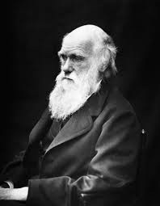
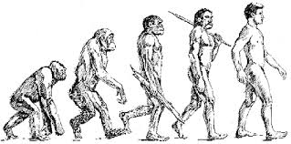

CHARLES ROBERT DARWIN (1809-1882)

Charles darwin set out on a voyage when he was 22 years old. The five-year voyage took him to South America and the islands off its coast. The studies that he conducted during this voyage were to change forever the way we look at the variety of life on Earth. Interestingly, after he got back to England, he never left its shores again. He stayed at home and conducted various experiments that led him to formulate his hypothesis that evolution took place through natural selection. He did not know the mechanism whreby variation arose in the species. He would have been enlighted by Mendel's experiments, but these two gentlemen did not know of each other or their work! We often assocaite Darwin solely with the theory of evolution. But he was an accomplished naturalist, and one of the studies he conducted was to do with the role of earthworms in soil fertility.
Darwin's Theory of Evolution by Natural Selection
It is also known as "Theory of Natural Selection" or Darwinism. It can be summarized as folows:

- Struggle existence:
Due to overpopulation, there is struggle for existence. There is struggle between the members of the same species as well as from other species for food, water, air and space.
- Variations exist within a population:
The offprings of the same parents also differ from one another and show variations.
- Struggle of fittest or Natural selection:
The individuals with favourable variations survive in the struggle. The organisms with unfavourable variations dieout and so only the fittest individuals survive, reproduce and transmit their favourable characters to the next generation.
- Orgin of new species:
As the favourable variations of the fittest animals are inherited to the offsprings, these variations when accumulated over for a long time, lead to the origin of the new species.